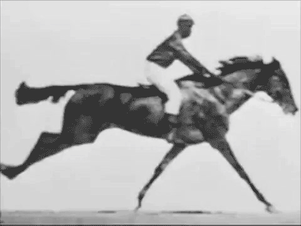

Yes! As seen in the 2nd picture all four of a horses hooves do leave the ground simultaneously!
This was proved in 1886 by Eadweard Muybridge.
After he was hired by Leland Stanford to prove the theory.
This series is credited as an ealy step in creating motion pictures.
